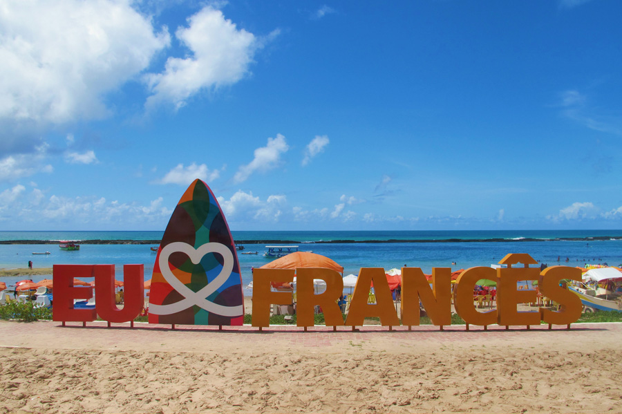
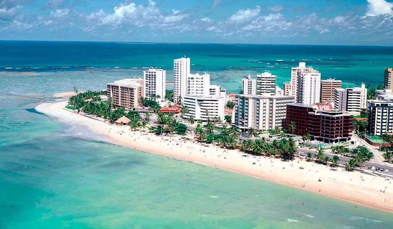
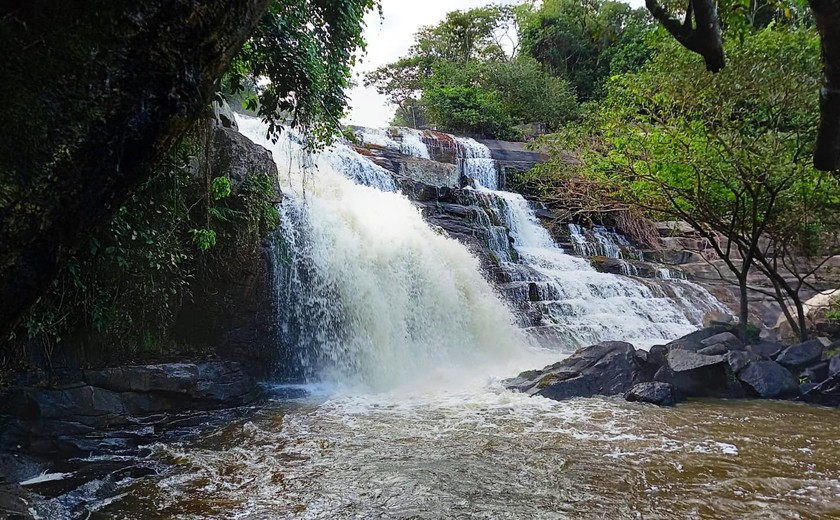

PRAIA DO FRANCÊS

A praia do Francês, localizada no município de Maceió, capital de Alagoas, é uma praia famosíssima entre a população alagoana e mesmo entre a de fora de Alagoas , conhecida por seus recifes de corais e seus mares agitados, estes, perfeitos para surfistas que procuram uma emoção a mais! A Praia do Francês é dividida em duas partes: o lado esquerdo e o lado direito.
Lado esquerdo
O lado esquerdo da Praia do Francês é caracterizada pela presença frequente de recifes de corais. Se quiser visitar essa parte na praia, é importante você contrar um profissional para sua segurança.
Lado direito
O lado direito é dito pelo seu mar agitado, com ondas grandes e frequentes, muito atraentes para quem gosta de esportes radicias e para os surfistas na área. Lembre-se de usar equipamento de segurança!
PRAIA DE PONTA VERDE

A praia de Ponta Verde é uma das muitas praias localizada na capital de Alagoas, Maceió, e é conhecida por suas belas e calmas águas verdes, orla com tantos coqueiros e piscina naturais na maré baixa.
Há muitas atividades turísticas para se fazer em Ponta Verde, dentre elas:
- Visitar a Feira de Artesanato de Pejuçara.
- Caminhar pela praia ao entardecer, com o pôr do sol ao fundo.
- Obviamente: se hospedar em um dos luxuosos hotéis de Ponta de Verde.
CACHOEIRA DO ANEL

A Cachoeira do Anel é um ponto turístico muito conhecido principalmente pelas trilhas que ele e seus arredores oferecem. Quem gosta de caminhar pela mata talvez se interesse!
Localizada no município e quilombo de Viçosa, em Alagoas, a Cachoeira do Anel é um ótimo espaço para banhos e trilhas, claro, com a devida segurança e métodos.